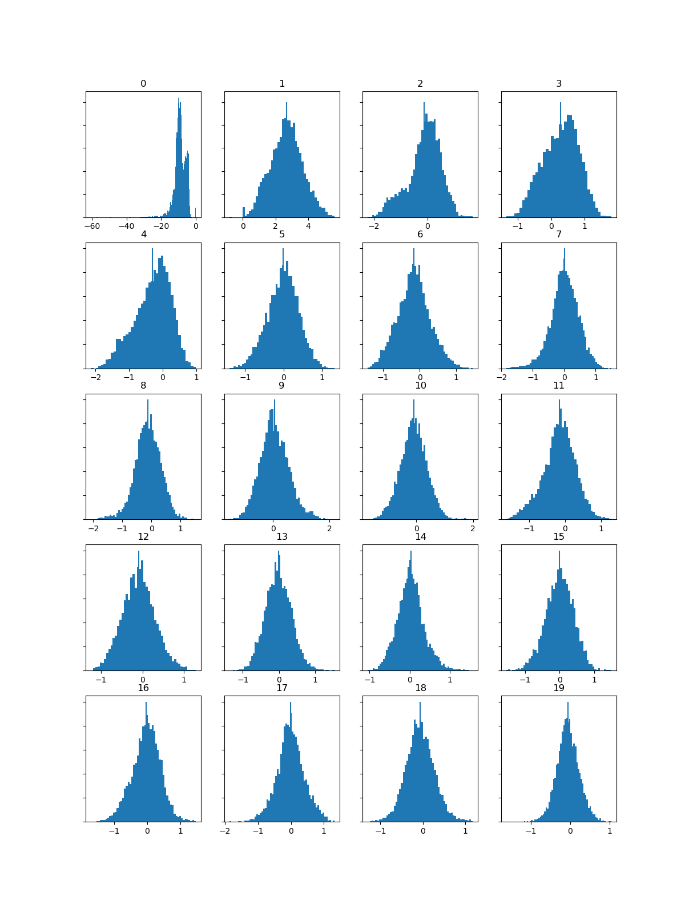

In this lab, I used the three audios from last week and extract into the following audio transformations with SonicVisualiser:
Spectrogram, Mel-Frequency Cepstral Coefficients (MFCCs), and Chromagram
Below are the audio analysis of my audios along with the waveform, and they are demonstrated in the following order:
1. Waveform
2. Spectrogram
3. Mel-Frequency Cepstral Coefficients (MFCCs)
4. Chromagram
1. One Summer Day
2. A Journey (A Dream of Flight)
3. Stroll
MFCCs Histograms
| One Summer Day | A Journey (A Dream of Flight) | Stroll (Hey Let's Go) |
|---|---|---|
|  |
The function of a MFCCs Histogram is to analysis timber, tone ID and quality of an audio.